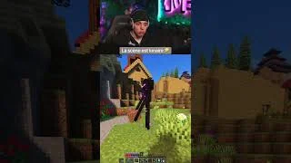
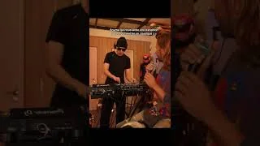

Les débuts
Des mois de travail, sans revenus.
Les résultats financiers ne venaient pas. Après plusieurs mois à créer des clips sans gagner d’argent, j’ai fini par abandonner.
Chaîne YouTube
Du contenu long aux moments qui retiennent l’attention.
Mon activité entrepreneuriale de création de contenu autour du clipping de streams, de l’édition de formats courts et de leur diffusion sur YouTube.


La dimension entrepreneuriale
La création de contenu s’inscrit dans mon entreprise. J’y relie sélection éditoriale, montage, diffusion et développement d’audience, avec l’envie de faire grandir une activité à mon image.
Repères de mon activité · octobre 2026
Ces repères concernent mon activité de création de contenu. NRclip s’inscrit dans cette démarche : développer un outil qui répond aux besoins rencontrés sur le terrain.
L’histoire de mon entreprise
Je me suis lancé dans le clipping pour essayer de gagner de l’argent. Au départ, je voulais voir si je pouvais construire quelque chose par moi-même et en tirer des revenus.
Les débuts
Les résultats financiers ne venaient pas. Après plusieurs mois à créer des clips sans gagner d’argent, j’ai fini par abandonner.
Le déclic
En repensant au chemin parcouru, j’ai réalisé que je n’étais plus au point de départ. Cette audience existait déjà : j’avais construit quelque chose qui méritait que je reprenne.
La reprise
J’ai repris avec plus de rigueur. C’est cette évolution dans ma façon de travailler qui a accompagné l’arrivée des premiers revenus.
Cette expérience m’a appris qu’une activité peut prendre du temps avant de rapporter, et que la façon de travailler compte autant que l’idée de départ.
La suite
Je souhaite développer cette activité et explorer de nouveaux projets. Les besoins rencontrés au quotidien nourrissent déjà NRclip, mon outil de préparation de clips.
Les réalités de l’entrepreneuriat
Créer une activité ne se résume pas à publier du contenu. Il faut aussi trouver du temps, gérer les démarches et accepter que les résultats ne soient pas réguliers.
Je mène cette activité en parallèle de mes études et de mon alternance. Cela m’oblige à préparer mes sessions de travail, à définir mes priorités et à avancer avec le temps dont je dispose.
J’ai rencontré des difficultés administratives, notamment avec la CAF, ainsi que des tentatives d’arnaque lors de la création de mon entreprise. J’ai appris à vérifier les interlocuteurs et les demandes avant de m’engager.
Les premiers essais ne fonctionnent pas toujours, et les revenus peuvent baisser. J’ai traversé des passages à vide qui m’ont appris à prendre du recul, à revoir ma façon de travailler et à persévérer.
Ma chaîne a déjà fait l’objet de signalements, dans des situations où je ne connaissais pas encore certains points du fonctionnement de la plateforme. Cette expérience m’a montré l’importance de mieux comprendre ses règles et ses contraintes pour adapter mes pratiques.
Un extrait doit se comprendre en quelques secondes, même sans avoir suivi le live d’origine. Le travail commence avec le choix du passage et se poursuit avec son rythme, son cadrage et son titre.
Je développe une activité de création de contenu autour du clipping de streams. Cette pratique m’amène à travailler le montage, la sélection des moments et l’adaptation aux formats de diffusion.
Repérer les réactions, les échanges et les séquences qui peuvent devenir un extrait compréhensible.
Travailler le cadrage vertical, la durée et les sous-titres pour rendre le contenu lisible sur téléphone.
Choisir un titre qui situe l’extrait et préparer sa diffusion sur la chaîne.
L’expérience de montage nourrit NRclip, conçu pour réduire les étapes répétitives de préparation.
Un passage intéressant doit garder assez de contexte pour être compris après le découpage.
L’automatisation prépare des extraits ; une revue permet de décider de ce qui mérite d’être publié.
La création de contenu apporte des besoins concrets au développement : sélection, montage et revue mobile.
Une sélection de formats courts publiés sur la chaîne.
La chaîne permet de découvrir directement les contenus publiés.
Parlons de ce projet